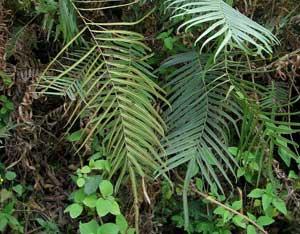

Thought the man-eating flora from The Little Shop of Horrors certainly set a precedent for gastronomical preferences, a true-to-life fern, the brake fern (Pteris vittate) discovered behind a chemical treatment works in Florida appears to have it beat for digestive capabilities. "This plant definitely has a high appetite for arsenic," says Lena Ma, a scientist with the University of Florida.
When Ma and colleagues screened plants growing on soil heavily contaminated by wood preservative, they found the brake fern (Pteris vittata) comprised arsenic concentrations of 4,000 parts per million, while other plants held only a fraction of that amount. Under controlled conditions, a clean fern planted in toxic soil quickly absorbed the toxic heavy metal, so much so that within two weeks arsenic made up two percent of the fern's weight. "Based on our greenhouse study, arsenic actually promotes [this] plant's growth," Ma says. "They look better and grow healthier."
A naturally occurring element in all soils, arsenic makes up a few parts per million in the earth worldwide. But its use as an herbicide and insecticide, and in wood preservation and as a tick control for cattle, has caused dangerous concentrations in some areas. "Agricultural application has caused quite a bit of arsenic contamination nationwide," Ma says. The element seeps from soils into water supplies and may cause skin cancer.
Though Ma is delighted by the discovery, she warns that it is not a panacea. "I see its potential to be used to clean up contaminated soil, contaminated waste, contaminated water," she says. "But we need more research to back it up." Also, with its arsenic concentrations, she warns, the fern is toxic to humans and animals.
|
 PHOTO: CC-BY-NC The Chinese ladder brake fern (Pteris vittata) can be composed of up to two percent arsenic. |
|
|